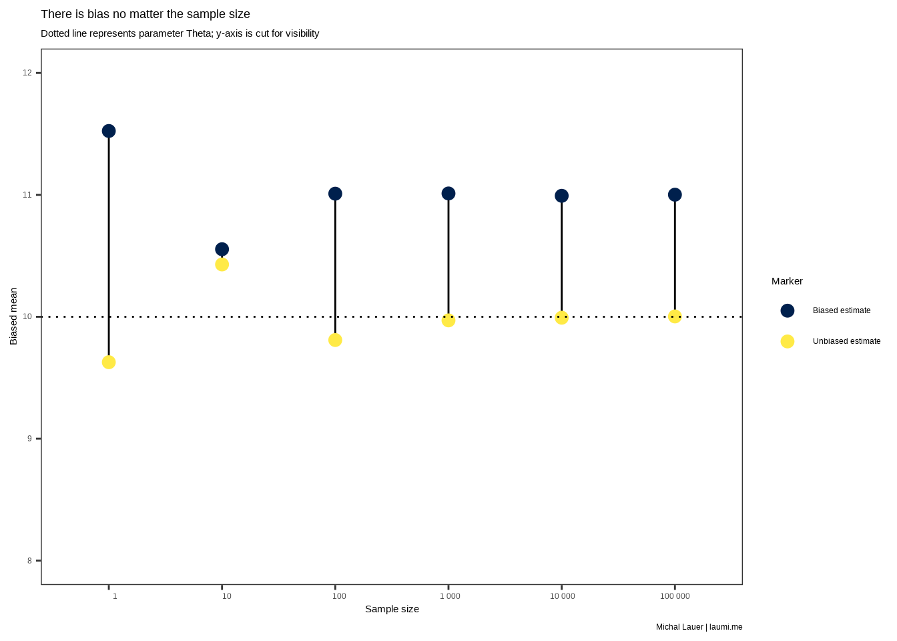
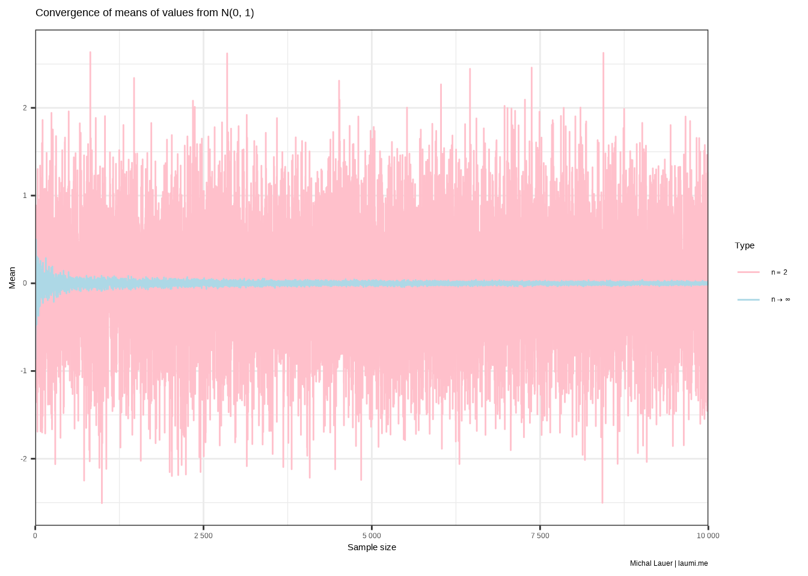
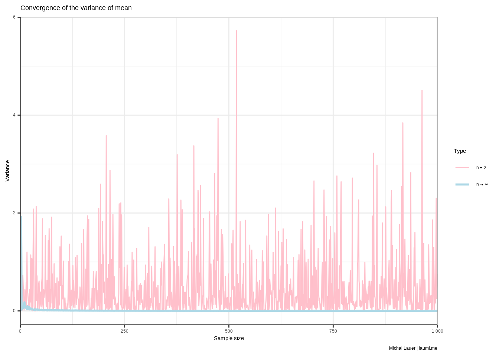

library(purrr)
library(dplyr)
# Graphs
library(ggplot2)
library(latex2exp)
sysfonts::font_add_google("Open Sans")
showtext::showtext_auto()
theme_set(theme_bw() +
theme(legend.text.align = 0))
.cap <- "Michal Lauer | laumi.me"Consistent Estimators: The Unseen Champions of Accurate Predictions
Consistent estimators hold a pivotal role in delivering precise statistical outcomes. Let’s unravel their mystery and reveal how they shape real-world prediction scenarios.
too long; didn’t read
- Consistency \(\neq\) Unbiasedness
- Biased estimate is always inconsistent
- Variance of a consistent estimator must tend to zero as \(n \to \infty\)
- Estimators can be both unbiased and inconsistent, or any other combination
Series introduction
This is a part of my series about estimators and their properties. If you don’t understand some concepts or would like to know, I fully suggest starting from the beginning!
Blog preparation
Motivation
In the exciting world of statistics, consistency is a key characteristic that turns good estimators into great ones. Picture a compass guiding an adventurer through a vast and unknown territory - that’s what a consistent estimator does in the terrain of data. It may start with some variance, but as the explorer gathers more information - just like increasing our sample size - it moves closer and closer to the true value. This is the magic of consistency: a learning process that refines initial guesses with increasing insight and experience. So let’s celebrate consistent estimators: they’re our trusty compass in the vibrant, ever-evolving landscape of data-driven decision-making.
About consistency
Statisticians are cheap
Let’s face it - statisticians are forced to be cheap. Good statisticians can take data and confidently make educated guesses about the overarching population. But, as you all know, a lot of data equals many costs. And the business we don’t want that. That’s why great statisticians can make great guesses from a relatively small sample of data. Large samples also bring another set of challenges, such as:
- the sample should be created at the same time (e.g., when a survey is conducted, all respondents should answer in the shortest time possible).
- somebody has to overlook the sampling (more respondents = more people to manage = more difficult).
- data processing can take longer time (imagine you’d have to process written responses from 10 000 respondents).
Big data sets can also makes the results less relevant as they are not very up-to-date. Don’t get me wrong - big samples are also great. They can make the results more representative, less biased, more precise, or more confident. But the sweet spot is somewhere in the middle.
Now imagine that you go through all the struggle - you manage to get a large sample, you get your project managers and C-something-O’s on board, you handle all the precious data - and the results are no more precise than a sample with a fourth of your respondents. That must suck!!!. Luckily, after reading this article, you won’t get into this issue, as you would first check the properties of your estimator - primarily, it’s consistency.
First, let me introduce consistency - more human-friendly and less math-nerdy. Let’s ask the question:
How precise is your estimate as the sample size grows?
Common sense might tell you that the estimate is more precise, e.g., closer to the population parameter. But this does not have to be always true. Imagine that - for some reason - the estimator’s variance is not decreasing with the increasing sample size. This would make the estimator inconsistent.
Tip
Consistency means, in loose terms, that the estimate is more precise as the sample size increases.
Math gibberish
Okay, let’s now transfer this problem to the statistical world. With an increasing sample size, we want to have more precise estimates. To put it in another way, we want to be closer and closer to the real parameter \(\theta\) with increasing sample size that the probability of the absolute difference of the estimate \(\hat{\theta}\) and parameter \(\theta\) is smaller than any positive real number \(\epsilon\) with probability 1. If we write it down, we end up with something like this (Malá 2016, p. 156):
\[ \lim_{n\to\infty} P(|\hat{\theta} - \theta| < \epsilon)=1 \tag{1}\]
This is also called the convergence in probability.
Consistency vs. unbiasedness
While I was doing research for this post, I often found sources that mix-up consistency and unbiasedness. While the terms are somewhat connected, they represent completely different things. Unbiasedness talks about the expected value, while consistency talks about convergence.
Whether an estimate is biased or unbiased holds for any sample size. If we have a biased estimator, no matter how many people we ask, the estimate will still either, on average, underestimate or overestimate the true parameter. Figure 1 shows two estimates. One is unbiased and the second overestimates \(\theta\) by 1.
set.seed(789)
tibble(n = 10^(0:5),
theta = 10,
bias = 1) %>%
mutate(biased = pmap_dbl(.l = ., .f = function(n, theta, bias) mean(rnorm(n, theta) + bias)),
unbiased = map2_dbl(.x = n, .y = theta, .f = function(n, theta) mean(rnorm(n, theta))),
n = format(n, scientific = FALSE, big.mark = " ")) |>
ggplot(aes(x = n)) +
geom_segment(aes(x = n, xend = n, y = unbiased, yend = biased)) +
geom_point(aes(y = unbiased, color = "Unbiased estimate"), size = 3) +
geom_point(aes(y = biased, color = "Biased estimate"), size = 3) +
coord_cartesian(ylim = c(8, 12)) +
geom_hline(aes(yintercept = theta), linetype = 3) +
scale_color_viridis_d(name = "Marker", option = "cividis") +
theme(
panel.grid.major = element_blank(),
panel.grid.minor = element_blank(),
# legend.position = "bottom",
axis.text.x = element_text(hjust = .5)
) +
labs(
title = "There is bias no matter the sample size",
subtitle = "Dotted line represents parameter Theta; y-axis is cut for visibility",
x = "Sample size", y = "Biased mean",
caption = .cap
)

Asymptotically unbiased estimates are affected by sample size, as their bias is going to \(0\) as \(n \to \infty\).
Necessary properties of consistency
In order to have a consistent estimate
- its variance needs to converge to zero, and
- it is at least asymptotically unbiased.
These properties (Malá 2016, p. 156) are sufficient for consistency. Let’s now focus on the first property.
Variance goes vroom
Consider a simple sample mean given by
\[ \overline{x} = \frac{1}{n} \sum_{i=1}^n x_i. \]
This sample mean has a known variance (Science: PennState 2023)
\[ \mathbb{D}\left(\overline{x}\right) = \frac{\sigma^2}{n}, \]
because
\[ \mathbb{D}\left(\frac{1}{n} \sum_{i=1}^n x_i\right) = \frac{1}{n^2} \mathbb{D}\left(\sum_{i=1}^n x_i\right) = \frac{1}{n^2} n \mathbb{D}\left(x_i\right) = \frac{1}{n^2} n \sigma^2 = \frac{\sigma^2}{n}. \tag{2}\]
Now imagine that for every sample size \(n > 1\), we only consider the first two respondents. That is, every sample has a constant size of \(2\).
\[ \overline{x}_s = \frac{x_1 + x_2}{2} \]
This estimate should still be usable because it is unbiased.
\[ \mathbb{E}\left(\frac{x_1 + x_2}{2}\right) = \frac{1}{2} \mathbb{E}\left(x_1 + x_2\right) = \frac{1}{2} 2\mu = \mu \]
This can also be seen in Figure 2, where the values oscillate around the true mean.
set.seed(789)
tibble(n = seq_len(9999) + 1, # starts at 2
sample = map(n, rnorm),
sample2 = map(sample, ~ .x[1:2]),
mean = map_dbl(sample, ~ mean(.x)),
mean2 = map_dbl(sample2, ~ mean(.x))) |>
ggplot(aes(x = n)) +
geom_line(aes(y = mean2, color = "n2")) +
geom_line(aes(y = mean, color = "ni")) +
scale_color_manual(name = "Type",
labels = c("n2" = TeX("$n = 2$"), "ni" = TeX("$n \\to \\infty$")),
values = c("n2" = "pink", "ni" = "lightblue")) +
scale_x_continuous(labels = scales::number_format(big.mark = " "),
limits = c(0, 10000), expand = c(0,0)) +
theme(legend.text.align = 0) +
labs(title = TeX("Convergence of means of values from N(0, 1)"),
x = "Sample size", y = "Mean",
caption = .cap)

Both estimators are unbiased, but one has a much bigger variance. The classical mean (\(\overline{x}\), where we calculate it over all values) has a decreasing variance, as seen in Equation 2. However, the mean of the first two values (\(\overline{x}_s\)) has a constant variance of \(\sigma^2 / 2\). Figure 3 shows the variance for both means as n increases.
set.seed(789)
tibble(n = seq_len(999) + 1, # starts at 2
sample = map(n, rnorm),
sample2 = map(sample, ~ .x[1:2]),
variance = map2_dbl(sample, n, ~ var(.x) / .y),
variance2 = map_dbl(sample2, ~ var(.x) / 2)) |>
ggplot(aes(x = n)) +
geom_line(aes(y = variance2, color = "n2")) +
geom_line(aes(y = variance, color = "ni"), linewidth = 1) +
scale_color_manual(name = "Type",
labels = c("n2" = TeX("$n = 2$"), "ni" = TeX("$n \\to \\infty$")),
values = c("n2" = "pink", "ni" = "lightblue")) +
scale_x_continuous(labels = scales::number_format(big.mark = " "),
limits = c(0, 1000), expand = c(0,0)) +
labs(title = "Convergence of the variance of mean",
x = "Sample size", y = "Variance",
caption = .cap)

The variance if the sample mean is decreasing as \(n \to \infty\), which supports the basic assumption in Equation 1 However, the mean from the first two values has a constant variance that does not decrease. Hence the convergence in probability is not satisfied.
Important
Sample mean is an unbiased and consistent estimator. The mean of the first two values is unbiased, but it is not consistent.
Consistently biased or inconsistently unbiased?
The second statement says that the estimator has to be at least asymptotically unbiased - in other words, it is not biased. This makes sense once you realize that bias is a difference between the expected value of the estimator and the population counterpart (Kozdron 2016).
\[ \text{Bias}(\hat{\theta}) = \mathbb{E}(\hat{\theta}) - \theta \]
If the bias is non-zero, there will always be some value \(\epsilon\) which is smaller than the absolute difference between the estimate and the parameter. The convergence in probability (a necessary condition for consistency) does not hold, and hence biased estimators are always inconsistent.
In the previous part, it was introduced that an unbiased estimator can be both consistent and inconsistent. The only option that is left now is an asymptotically unbiased estimator. Surprisingly, an asymptotically unbiased estimator can still be both consistent and inconsistent. Let’s modify the mean of the first two values and add a constant of \(1/n\).
\[ \overline{x}_{s_2} = \frac{x_1 + x_2}{2} + \frac{1}{n} \]
The new expected value is
\[ \mathbb{E}\left(\overline{x}_{s_2}\right) = \mu + \frac{1}{n}, \]
while the variance is
\[ \mathbb{D}\left(\overline{x}_{s_2}\right) = \frac{1}{4} 2*\sigma^2 + 0 = \frac{\sigma^2}{2}. \]
Based on these properties, we can identify that this estimator is asymptotically unbiased and inconsistent.
Footnotes
Session Info
─ Session info ───────────────────────────────────────────────────────────────
setting value
version R version 4.4.3 (2025-02-28)
os Ubuntu 24.04.2 LTS
system x86_64, linux-gnu
ui X11
language (EN)
collate C.UTF-8
ctype C.UTF-8
tz UTC
date 2025-06-15
pandoc 3.2 @ /opt/quarto/bin/tools/ (via rmarkdown)
quarto 1.5.56 @ /usr/local/bin/quarto
─ Packages ───────────────────────────────────────────────────────────────────
! package * version date (UTC) lib source
P dplyr * 1.1.4 2023-11-17 [?] RSPM (R 4.4.0)
P ggplot2 * 3.5.2 2025-04-09 [?] RSPM (R 4.4.0)
P latex2exp * 0.9.6 2022-11-28 [?] RSPM (R 4.4.0)
P purrr * 1.0.4 2025-02-05 [?] RSPM (R 4.4.0)
P sessioninfo * 1.2.3 2025-02-05 [?] RSPM (R 4.4.0)
[1] /home/runner/work/laumi.me/laumi.me/renv/library/linux-ubuntu-noble/R-4.4/x86_64-pc-linux-gnu
[2] /home/runner/.cache/R/renv/sandbox/linux-ubuntu-noble/R-4.4/x86_64-pc-linux-gnu/17ee7825
* ── Packages attached to the search path.
P ── Loaded and on-disk path mismatch.
──────────────────────────────────────────────────────────────────────────────Feel free to comment below your thoughts! If you have found some things unclear, misleading, or incorrect, feel free to let me know and I will work on it as soon as possible.
References
KOZDRON, Michael, 2016. Evaluating the goodness of an estimator: Bias, mean-square error, relative efficiency (chapter 3). stat.math.uregina.ca [online]. [accessed. 2020-09-11]. Available at: https://uregina.ca/~kozdron/Teaching/Regina/252Winter16/Handouts/ch3.pdf
MALÁ, Ivana, 2016. Vybrané kapitoly z teorie pravděpodobnosti a matematické statistiky. Vydání první. Praha: Oeconomica, nakladatelství VŠE. ISBN 978-80-245-2184-8.
SCIENCE: PENNSTATE, Eberly College of, 2023. STAT 414: Introduction to probability theory: Lecture 24.4 - mean and variance of sample mean [online]. 2023. Available at: https://online.stat.psu.edu/stat414/lesson/24/24.4